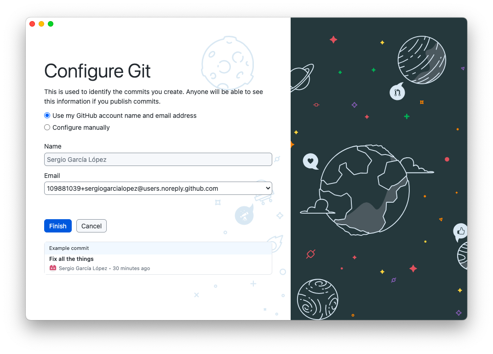
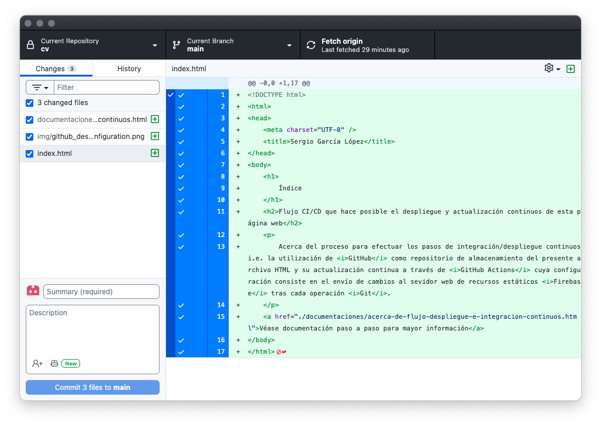

Flujo CI/CD que hace posible el despliegue y actualización continuos de esta página web
-
A partir de una página web codificada en archivo HTML y de un repositorio de GitHub para su
almacenamiento
- Disponer de un archivo HTML
- Disponer de una cuenta GitHub
- Crear el repositorio GitHub que almacenará el archivo HTML
-
Se prescinde de Git como herramienta de línea de comandos pues el equipo actual imposibilita su
instalación dada la actual incapacidad en tamaño disponible en el disco para su instalación a través de las
herramientas de Xcode (20 GB necesarios) y debido a la incompatibilidad del administrador de paquetes
Homebrew con la versión actual de MacOS.
Por tanto, se hará uso de la integración de Git
desde la aplicación GitHub Desktop:
- Comando: brew install github

-
Una vez configurado GitHub Desktop y especificado el directorio local del repositorio, a saber: /Users/ss/Documents/GitHub/cv; copiamos todo contenido en la
ruta local /Users/ss/CV o directorio fuente (que incluye el archivo HTML) y lo
pegamos en el directorio local del repositorio, valga la redundancia: /Users/ss/Documents/GitHub/cv. Los cambios son detectados en
automático y es posible hacer commit:

-
Previo a realizar el primer commit y como requisito para cualquier operación involucrada en el proceso de integración/despliegue continuos, es necesario: